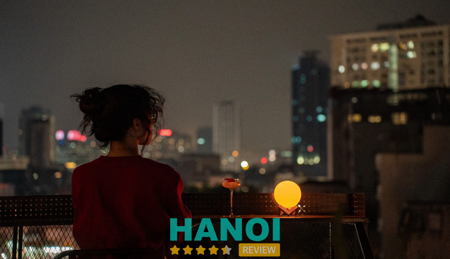
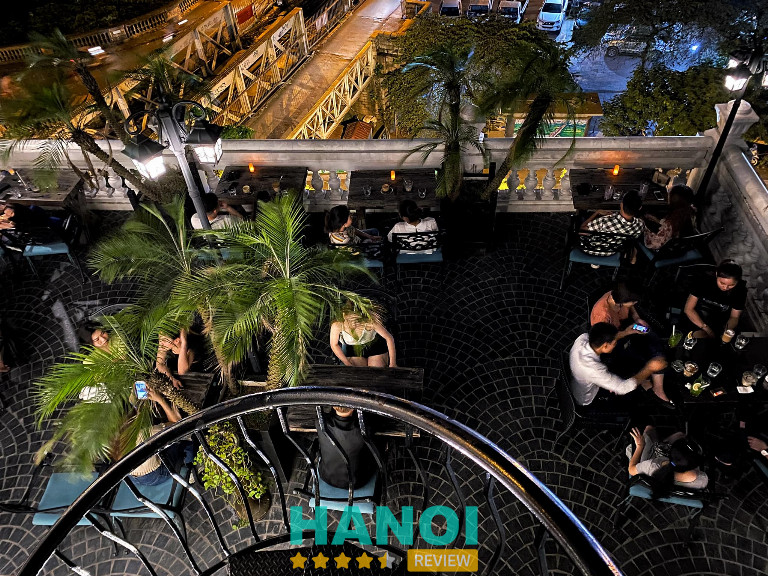
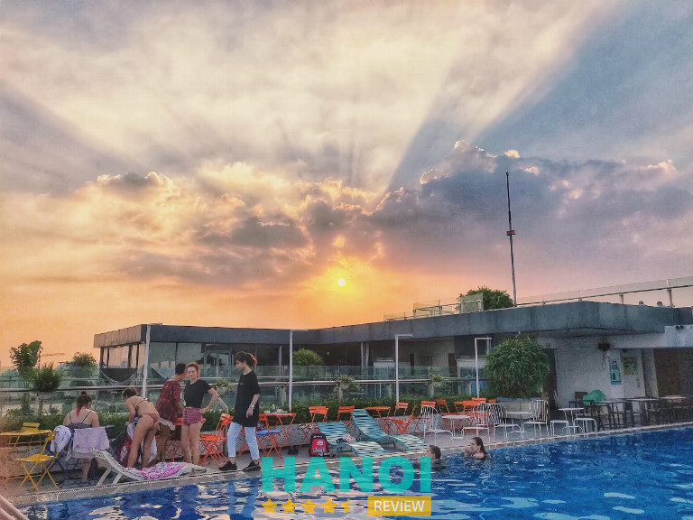
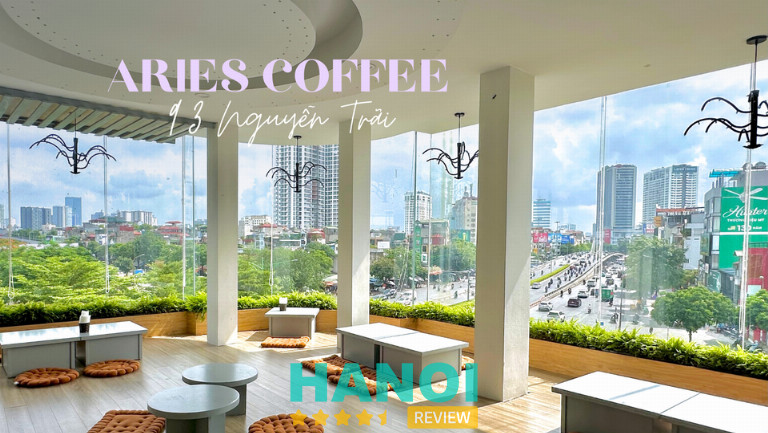
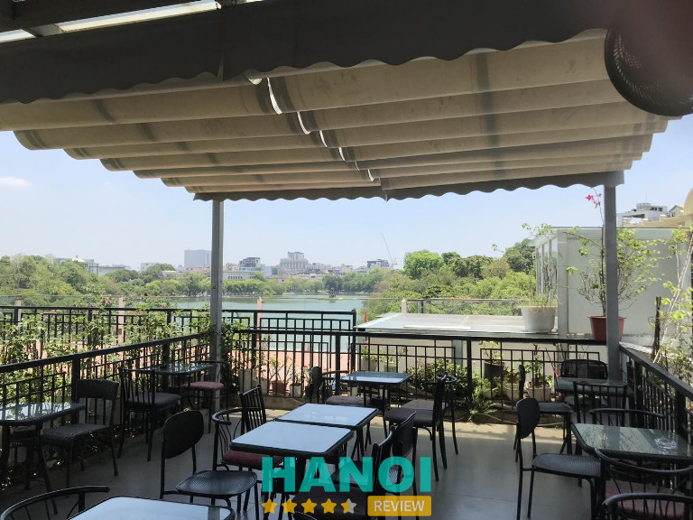
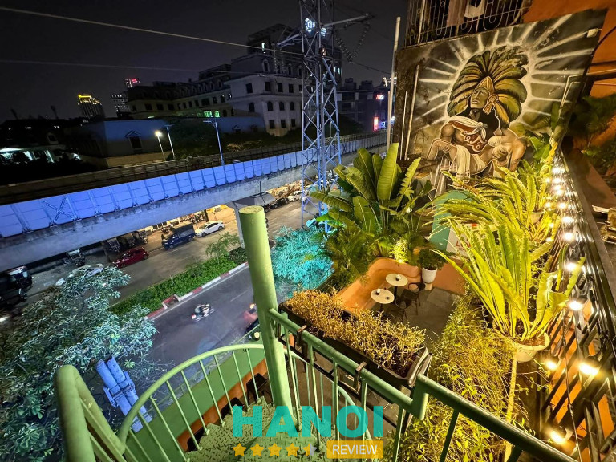
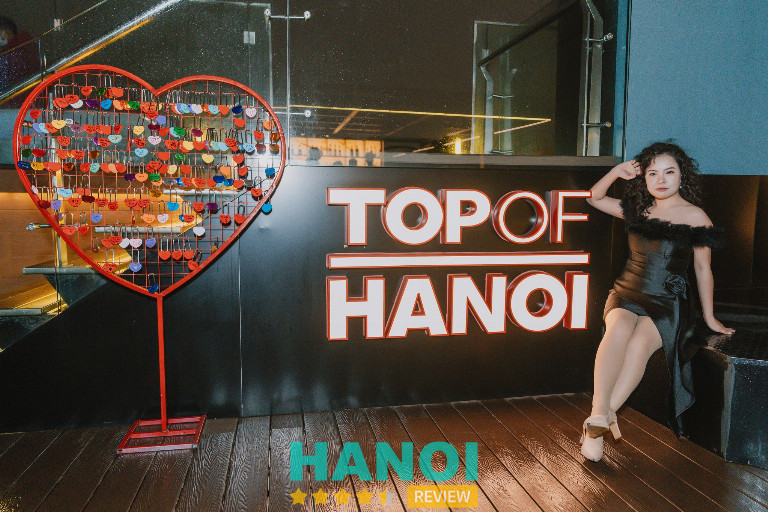
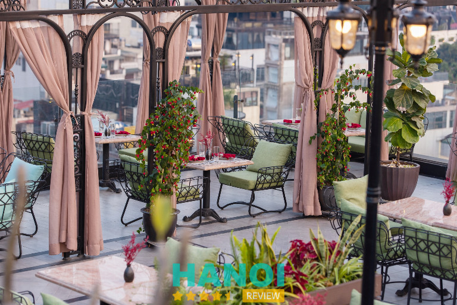
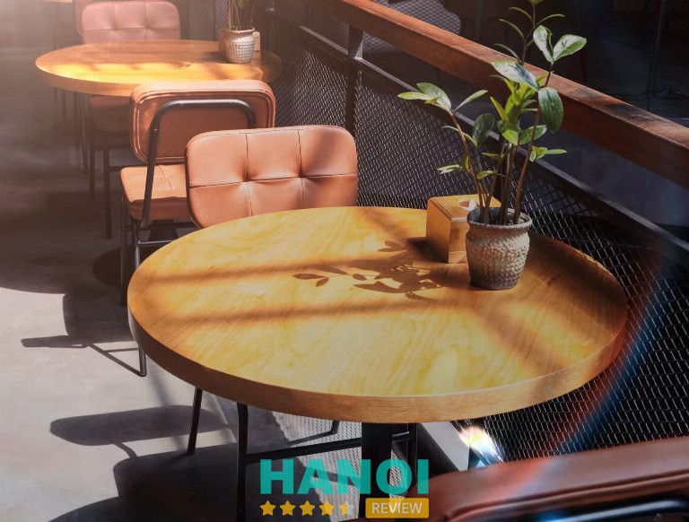
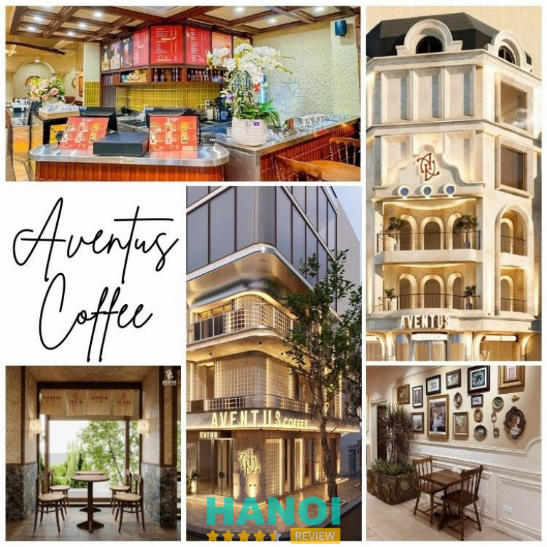

10 Quán cafe trên cao ở Hà Nội mang đến trải nghiệm thú vị
Tìm kiếm một điểm hẹn lý tưởng, quán cafe trên cao ở Hà Nội sẽ là lựa chọn tuyệt vời. Với không gian thoáng đãng, tầm nhìn rộng mở, những quán cafe này không chỉ mang lại cảm giác thư giãn, mà còn là nơi để tận hưởng khoảnh khắc bình yên giữa lòng thủ đô.
10 Quán cafe trên cao tại Hà Nội với tầm nhìn đẹp và không gian lý tưởng
Khám phá quán cafe trên cao ở Hà Nội giúp bạn tận hưởng phong cảnh thành phố từ một góc nhìn mới. Đây là điểm hẹn tuyệt vời để thư giãn và kết nối.
Zero Point – Đống Đa
- Giờ mở cửa: 18.00 – 02:00
- Giá dao động: 40.000 – 100.000 VNĐ
Zero Point là một trong những quán cafe trên cao ở Hà Nội được nhiều bạn trẻ yêu thích. Nằm ở tầng 9 ngay trung tâm quận Đống Đa, quán mang đến không gian cực chill, tầm nhìn rộng mở hướng về phía tây thành phố. Đây là địa điểm lý tưởng để ngắm hoàng hôn, trò chuyện cùng bạn bè và lưu lại những khoảnh khắc sống ảo đầy ấn tượng.

Zero Point ghi điểm bởi thiết kế hiện đại, thoáng đãng cùng hệ thống ánh sáng lung linh vào buổi tối. Quán đặc biệt được biết đến với view cao nhìn bao quát thành phố, mang lại cảm giác thư giãn và gần gũi với thiên nhiên ngay giữa lòng đô thị nhộn nhịp. Giá cả cũng vô cùng hợp lý, chỉ từ 40.000 – 100.000 cho một buổi trải nghiệm đáng nhớ.
Thực đơn và dịch vụ tại Zero Point:
Đến với Zero Point, bạn sẽ được thưởng thức đa dạng thức uống và đồ ăn nhẹ hấp dẫn:
- Cà phê pha máy, cà phê truyền thống
- Trà hoa quả tươi mát
- Sinh tố, nước ép bổ dưỡng
- Mocktail, cocktail sáng tạo
- Các món ăn vặt, đồ nhắm đi kèm
Zero Point hiện có nhiều cơ sở tại Hà Nội, tất cả đều là quán cafe trên cao ở Hà Nội với không gian thoáng mát. Mỗi chi nhánh đều mang phong cách riêng nhưng giữ trọn vẹn sự lãng mạn, hiện đại và phù hợp cho những buổi hẹn hò, gặp gỡ bạn bè hay làm việc.
Zero Point không chỉ là nơi uống cà phê mà còn là điểm hẹn của những tâm hồn yêu thích sự yên bình và cái đẹp của thành phố. Nếu bạn đang tìm kiếm một quán cafe trên cao ở Hà Nội, Zero Point chắc chắn là lựa chọn tuyệt vời.
Thông tin liên hệ:
- Địa chỉ: Số 1 Nguyễn Phúc Lai, Ô Chợ Dừa, Đống Đa, Hà Nội
- Điện thoại: 0961 799 918
- Email: zeropointpub@gmail.com
- Facebook.com/zeropointpub2022
Serein Café & Lounge – Hoàn Kiếm
- Giờ mở cửa: 09h00 – 23h00
- Giá tham khảo: 35.000 – 60.000 VNĐ/người
Serein Café & Lounge là quán cafe trên cao ở Hà Nội giá rẻ được nhiều người yêu thích. Nằm cạnh khu tập thể Ga Long Biên, quán mang đến không gian yên tĩnh, thoáng đãng cùng tầm nhìn tuyệt đẹp.
Với phong cách thiết kế kiểu biệt thự Tây cổ điển, gam màu nâu trầm chủ đạo nhưng vẫn ấm cúng nhờ hệ thống đèn chiếu sáng tinh tế, nơi đây là điểm hẹn lý tưởng cho những ai muốn tìm một quán cafe trên cao ở Hà Nội để thư giãn, hẹn hò hay ngắm cảnh.

Quán cafe trên cao ở Hà Nội giá rẻ này mang đến trải nghiệm độc đáo khi từ bên trong có thể ngắm trọn vẹn cây cầu Long Biên – biểu tượng hơn 100 năm tuổi của Thủ đô. Không gian mở, thoáng đãng và view tuyệt đẹp khiến bất kỳ ai đến cũng muốn dừng chân lâu hơn. Menu đa dạng với nhiều loại đồ uống hấp dẫn, phù hợp với cả người trẻ và du khách nước ngoài.
Dịch vụ và sản phẩm tại Serein Café & Lounge:
- Cà phê truyền thống, cà phê pha máy
- Trà hoa quả, trà sữa, matcha
- Sinh tố, nước ép, đồ uống healthy
- Cocktail, mocktail độc đáo
- Bánh ngọt ăn kèm
- Không gian check-in, chụp ảnh đẹp
- Phục vụ chuyên nghiệp, thân thiện
Serein Café & Lounge không chỉ là quán cafe trên cao ở Hà Nội giá rẻ mà còn là nơi mang đến trải nghiệm khó quên. Với view nhìn thẳng ra cầu Long Biên, không gian lãng mạn cùng đồ uống đa dạng, đây chắc chắn là điểm đến lý tưởng cho những ai muốn tận hưởng vẻ đẹp cổ kính và thơ mộng của Hà Nội.
Thông tin liên hệ:
- Địa chỉ: 16 Tập thể Ga Long Biên, Trần Nhật Duật, Hoàn Kiếm, Hà Nội
- Điện thoại: 0965 990 956
- Email: heinrichnguyen11@gmail.com
- Facebook: fb.com/SereinCafeLounge16
Trill Rooftop Cafe – Thanh Xuân
- Giờ mở cửa: 07h00 – 22h30
- Giá tham khảo: 50.000 – 250.000đ/người
Trill Rooftop Cafe là một trong những quán cafe trên cao ở Hà Nội được giới trẻ yêu thích nhất. Nằm trên tầng 26 của tòa nhà Hei Tower, quán sở hữu không gian thoáng đãng, lộng gió và tầm nhìn bao quát thành phố. Đây là điểm đến lý tưởng để bạn vừa thưởng thức đồ uống, vừa tận hưởng cảnh đẹp Hà Nội từ trên cao..
Với thiết kế sân vườn thượng lãng mạn, trang trí bằng nhiều vật dụng handmade độc đáo, Trill Rooftop Cafe nhanh chóng trở thành một trong những quán cafe rooftop giá rẻ được nhắc đến nhiều nhất.

Không chỉ là một quán cafe trên cao ở Hà Nội, Trill Rooftop Cafe còn ghi dấu ấn với phong cách trang trí sáng tạo và menu đa dạng. Mọi chi tiết đều mang đến cảm giác gần gũi nhưng không kém phần hiện đại, tạo nên không gian “check-in” hoàn hảo cho giới trẻ.
Menu hấp dẫn tại Trill Rooftop Cafe:
Đến với Trill Rooftop Cafe, bạn có thể thưởng thức nhiều loại đồ uống đặc biệt với mức giá hợp lý:
- Các loại cocktail như Mojito, Ice Blended thơm mát
- Trà và cà phê với hương vị riêng biệt
- Đồ uống sáng tạo pha chế theo công thức đặc trưng của quán
- Các món ăn nhẹ đi kèm, thích hợp để thưởng thức cùng bạn bè
Với không gian mở, giá cả phải chăng và chất lượng đồ uống ổn định, Trill Rooftop Cafe chính là địa điểm lý tưởng để bạn tận hưởng những khoảnh khắc thư giãn. Nếu bạn đang tìm một quán cafe trên cao ở Hà Nội để vừa ngắm cảnh, vừa thưởng thức hương vị tuyệt vời thì Trill Rooftop Cafe chính là lựa chọn đáng cân nhắc.
Thông tin liên hệ:
- Địa chỉ: Tầng 26, Tòa nhà Hei Tower, số 1 Nguỵ Như Kon Tum, Thanh Xuân, Hà Nội
- Điện thoại: 0916 733 838
- Email: trillgroupvn@gmail.com
- Facebook: fb.com/trillgroup
Aries Coffee – Thanh Xuân
Aries Coffee là một trong những quán cafe trên cao ở Hà Nội giá rẻ được nhiều bạn trẻ yêu thích. Quán nằm tại quận Thanh Xuân có không gian rộng rãi, thoáng mát và view nhìn toàn cảnh thành phố lung linh về đêm. Với phong cách thiết kế kết hợp Âu – Việt, từng chi tiết trang trí đều tạo nên sự độc đáo, đem lại trải nghiệm khó quên cho khách hàng.

Quán có cả không gian trong nhà và ngoài trời, phù hợp cho những buổi gặp gỡ bạn bè hoặc hẹn hò lãng mạn. Vào buổi tối, tầng thượng của quán được trang trí bằng nhiều ánh đèn lung linh, tạo cảm giác chill và thư giãn. Đây cũng là địa điểm lý tưởng để chụp ảnh “sống ảo” với background Hà Nội đầy thơ mộng.
Thực đơn và giá cả:
Dù được biết đến là quán cafe trên cao ở Hà Nội giá rẻ, Aries Coffee vẫn mang đến đồ uống ngon miệng và đa dạng. Menu phong phú với nhiều loại thức uống giải khát được ưa chuộng:
- Cà phê truyền thống
- Sinh tố trái cây
- Nước ép tươi mát
- Trà hoa quả
- Đồ uống mix sáng tạo
Giá cả ở đây rất phải chăng, chỉ từ 30.000 – 55.000 VNĐ/người, phù hợp cho cả sinh viên và nhân viên văn phòng.
Không chỉ là nơi để thưởng thức đồ uống, Aries Coffee còn là điểm đến để bạn tìm chỗ nghỉ ngơi, tránh cái nóng mùa hè và tận hưởng không khí trong lành trên cao. Với không gian đẹp, giá hợp lý, quán xứng đáng nằm trong danh sách những quán cafe trên cao ở Hà Nội giá rẻ mà bạn không nên bỏ qua.
Thông tin liên hệ:
- Địa chỉ: 93 Nguyễn Trãi, Thanh Xuân, Hà Nội
- Điện thoại: 024 6286 9999
- Facebook: fb.com/93nguyentrai
Vườn Phố Cổ Cafe – Hoàn Kiếm
- Giờ mở cửa: 07h00 – 22h00
- Giá tham khảo: 20.000 – 55.000 VNĐ/người
Vườn Phố Cổ Cafe là một trong những quán cafe trên cao ở Hà Nội giá rẻ nổi tiếng, tọa lạc tại số 11 Hàng Gai, Hoàn Kiếm. Quán ẩn mình trong con hẻm nhỏ ngay trung tâm phố cổ nên hơi khó tìm, nhưng chính điều đó lại mang đến sự yên bình giữa lòng Thủ đô. Không gian tại đây gợi nhớ những hồi ức xưa cũ, giản dị mà ấm áp, thích hợp cho cả du khách lẫn người dân Hà Nội tìm về chút bình yên.

Điểm nổi bật của Vườn Phố Cổ Cafe là tầng thượng thoáng mát, lộng gió. Từ đây, bạn có thể phóng tầm mắt xuống toàn cảnh Hồ Gươm – biểu tượng của Hà Nội. Hình ảnh cầu Thê Húc đỏ cong vắt ngang mặt nước hay Tháp Rùa cổ kính in bóng lung linh đều hiện lên rõ rệt. Đây chính là lý do khiến quán trở thành địa điểm check-in lý tưởng cho nhiều bạn trẻ.
Đồ uống ở Vườn Phố Cổ Cafe không quá cầu kỳ, nhưng chất lượng luôn đảm bảo. Nổi bật nhất chính là món cafe trứng – đặc sản của quán. Trứng được đánh bông mịn, không ngọt gắt, không tanh, hòa quyện cùng vị cafe thơm nồng, tạo nên hương vị độc đáo khó quên. Bên cạnh đó, menu cũng có nhiều lựa chọn khác với mức giá phải chăng.
Menu tham khảo:
- Cafe trứng đặc sản
- Cafe đen, cafe sữa truyền thống
- Trà nóng/lạnh các loại
- Sinh tố, nước ép trái cây
- Một số đồ ăn vặt kèm
Nếu bạn đang tìm một quán cafe trên cao ở Hà Nội giá rẻ với không gian yên tĩnh, view Hồ Gươm tuyệt đẹp và đồ uống chất lượng, Vườn Phố Cổ Cafe chắc chắn là lựa chọn không thể bỏ qua.
Thông tin liên hệ:
- Địa chỉ: 11 Phố Hàng Gai, Hà Nội
- Điện thoại: 024 3928 8153
- Email: cafephoco11hanggaii@gmail.com
- Facebook: fb.com/cafephocohanggai
Lofita Cafe – Cầu Giấy
- Giờ mở cửa: 07h30 – 22h00
- Giá tham khảo: 35.000 – 100.000 VNĐ/người
Lofita là thương hiệu cafe nổi tiếng với hệ thống nhiều chi nhánh tại Hà Nội, được đông đảo giới trẻ yêu thích. Với không gian xanh mát, hiện đại và đầy phong cách, mỗi cơ sở Lofita đều mang đến một concept riêng biệt, phù hợp cho những buổi hẹn hò, tụ tập bạn bè hay làm việc. Đây cũng là một trong những quán cafe trên cao ở Hà Nội giá rẻ, kết hợp giữa không gian thoải mái và view thành phố cực đẹp.

Không chỉ chú trọng thiết kế, Lofita còn ghi điểm nhờ sự đa dạng trong menu. Thực đơn gồm nhiều loại đồ uống tốt cho sức khỏe như detox, sinh tố, trà hoa quả, các loại cafe chất lượng cao cùng nhiều loại bánh ngọt, đồ ăn nhẹ.
Đặc biệt, hai cơ sở tại Hồ Tùng Mậu và Phố Huế sở hữu view từ trên cao, giúp khách hàng vừa nhâm nhi đồ uống vừa ngắm nhìn nhịp sống Hà Nội từ ban ngày đến khi phố lên đèn.
Menu tại Lofita Cafe:
- Đồ uống detox, nước ép, sinh tố
- Các loại cafe truyền thống & hiện đại
- Trà hoa quả, matcha, cacao
- Bánh ngọt, bánh mặn đa dạng
- Đồ ăn nhẹ, bữa sáng tiện lợi
Nếu bạn đang tìm kiếm một quán cafe trên cao ở Hà Nội giá rẻ, có không gian đẹp, nhiều góc “sống ảo” và menu phong phú, Lofita chính là địa chỉ không thể bỏ qua. Với dịch vụ tận tâm và mức giá hợp lý, Lofita hứa hẹn mang đến trải nghiệm thư giãn tuyệt vời cho mọi khách hàng.
Thông tin liên hệ:
- Địa chỉ: 225 Trần Quốc Hoàn, Dịch Vọng, Cầu Giấy, Hà Nội
- Hotline: 1800 6503
- Website: lofita.vn
- Facebook: fb.com/lofitateaandcoffee
Top Of Ha Noi – Ba Đình
- Giờ mở cửa: 08h00 đến 23h00
- Giá tham khảo: 100.000 – 300.000 VNĐ/người
Top Of Ha Noi là một trong những quán cafe trên cao ở Hà Nội giá rẻ nổi tiếng, tọa lạc tại tầng 67 của tòa nhà Lotte Center – một trong những tòa nhà cao nhất thủ đô.
Với không gian thoáng đãng, phong cách trang trí tối giản nhưng sang trọng, quán mang đến cảm giác như đang tận hưởng tại một khu nghỉ dưỡng ngoài trời. Từ đây, bạn có thể ngắm nhìn trọn vẹn Hồ Tây, Lăng Chủ tịch Hồ Chí Minh và toàn cảnh Hà Nội lung linh về đêm.

Điểm nổi bật tại Top Of Ha Noi:
Không chỉ đơn thuần là một quán cafe, Top Of Ha Noi còn đem đến trải nghiệm độc đáo cho khách hàng:
- Đài quan sát 360 độ: Cho phép bạn chiêm ngưỡng toàn cảnh thành phố bằng ống nhòm hiện đại.
- Khu Skywalk: Mang đến cảm giác lơ lửng trên cao, giúp bạn vừa thưởng thức cafe vừa trải nghiệm cảm giác mạnh.
- View hồ cực đẹp: Không gian mở với tầm nhìn trực tiếp ra Hồ Tây và trung tâm thành phố.
Dịch vụ nổi bật:
- Cafe và đồ uống đa dạng, giá hợp lý.
- Không gian check-in sang trọng, thích hợp chụp ảnh sống ảo.
- Trải nghiệm Skywalk độc đáo.
- Đài quan sát mở cửa cho khách tham quan.
Nếu bạn đang tìm kiếm một quán cafe trên cao ở Hà Nội giá rẻ vừa có không gian thư giãn, vừa có trải nghiệm mới mẻ, Top Of Ha Noi chắc chắn là lựa chọn không thể bỏ qua. Đây không chỉ là nơi thưởng thức cafe mà còn là điểm đến lý tưởng để ngắm nhìn vẻ đẹp thủ đô từ trên cao.
Thông tin liên hệ:
- Địa chỉ: Tầng 67, Lotte Center, số 54 Liễu Giai, Ba Đình, Hà Nội
- Điện thoại: 024 3333 3016
- Email: topofhanoi@lotte.net
- Facebook: fb.com/topofhanoi
Skyline Hanoi – Hoàn Kiếm
Skyline Hanoi là một trong những điểm đến nổi bật bậc nhất khi nhắc đến các quán cafe rooftop và nhà hàng sang trọng ở quận Hoàn Kiếm, Hà Nội. Nằm ngay trung tâm phố cổ, với tầm nhìn bao quát Hồ Gươm, cầu Long Biên và toàn cảnh khu phố cổ, Skyline Hanoi đã trở thành địa chỉ quen thuộc của du khách và người dân thủ đô.
Không gian sang trọng, kết hợp hài hòa giữa nhà hàng, quán bar và bể bơi ngoài trời, mang đến cảm giác thư giãn, lãng mạn và đẳng cấp. Với vị trí đắc địa, đây chính là lựa chọn lý tưởng cho những ai muốn trải nghiệm ẩm thực và không gian view “triệu đô” ngay giữa lòng Hà Nội.

Skyline Hanoi không chỉ đơn thuần là một nhà hàng, mà còn là một tổ hợp giải trí và thư giãn với nhiều dịch vụ hấp dẫn. Quán chú trọng thiết kế tinh tế, hiện đại, kết hợp ánh sáng ấm áp và không khí thoáng đãng, phù hợp cho các buổi hẹn hò, tiệc tùng hay gặp gỡ đối tác. Đội ngũ nhân viên chuyên nghiệp, phục vụ tận tình, luôn tạo cho khách hàng cảm giác thoải mái, sang trọng.
Các dịch vụ tại Skyline Hanoi:
- Nhà hàng ẩm thực cao cấp với thực đơn đa dạng món Âu – Á.
- Quầy bar hiện đại phục vụ cocktail, rượu vang, mocktail độc đáo.
- Bể bơi ngoài trời – không gian lý tưởng để thư giãn.
- Dịch vụ tổ chức sự kiện, tiệc cưới, sinh nhật với phong cách riêng biệt.
- Không gian rooftop view toàn cảnh Hồ Gươm và phố cổ Hà Nội.
Skyline Hanoi xứng đáng là địa chỉ sang trọng và đẳng cấp bậc nhất khi tìm kiếm quán cafe, nhà hàng rooftop ở quận Hoàn Kiếm Hà Nội. Với tầm nhìn đẹp, dịch vụ chuyên nghiệp và không gian thư giãn tuyệt vời, Skyline Hanoi chắc chắn sẽ mang lại cho bạn những trải nghiệm khó quên.
Thông tin liên hệ:
- Địa chỉ: 38 Gia Ngư, Hàng Bạc, Hoàn Kiếm, Hà Nội
- Điện thoại: 096 808 30 66
- Email: info@skylinehanoi.com
- Website: skylinehanoi.com
- Facebook: fb.com/skyline38giangu
Eden Garden – Cafe & Bistro – Hà Đông
- Giờ mở cửa: 8:00 – 23:00
- Giá tham khảo: 30.000 – 65.000 VNĐ
Eden Garden – Cafe & Bistro là một trong những quán cà phê sân vườn nổi bật ở quận Hà Đông Hà Nội. Với phương châm “Feeling Nature”, Eden mang đến không gian xanh mát, gần gũi với thiên nhiên, thích hợp cho cả gia đình, bạn bè và đồng nghiệp.
Nổi bật với phong cách kết hợp giữa cafe & bistro, Eden không chỉ phục vụ đồ uống mà còn có thực đơn ẩm thực đa dạng, tạo nên trải nghiệm trọn vẹn cho thực khách. Đây là điểm đến lý tưởng cho những ai đang tìm kiếm quán cafe sân vườn yên tĩnh, thoáng đãng tại Hà Nội.

Eden Garden gây ấn tượng với thiết kế sân vườn rộng rãi, nhiều cây xanh và ánh sáng tự nhiên, mang lại cảm giác thư giãn, trong lành. Không gian được chia thành nhiều khu vực, từ trong nhà sang trọng đến ngoài trời thoáng đãng, phù hợp cho nhiều mục đích khác nhau: hẹn hò, họp nhóm hay làm việc. Đặc biệt, Eden còn tổ chức các sự kiện nhỏ như sinh nhật, tiệc thân mật, mang lại sự tiện lợi cho khách hàng.
Thức uống và dịch vụ:
Eden Garden – Cafe & Bistro đáp ứng nhu cầu đa dạng của khách hàng với menu phong phú:
- Cà phê pha máy và cà phê truyền thống
- Trà hoa quả và trà sữa
- Nước ép, sinh tố tốt cho sức khỏe
- Các món ăn nhẹ và bánh ngọt đi kèm
- Bistro với thực đơn ẩm thực đa dạng, phục vụ bữa chính và tiệc nhỏ
Eden Garden – Cafe & Bistro là quán cafe sân vườn ở Hà Đông Hà Nội mang đến không gian thư giãn, tươi xanh và dịch vụ chất lượng. Đây là lựa chọn hoàn hảo cho những ai yêu thiên nhiên, muốn tận hưởng một ly cà phê hay bữa ăn nhẹ trong khung cảnh yên bình. Eden chắc chắn sẽ để lại cho bạn trải nghiệm đáng nhớ.
Thông tin liên hệ:
- Địa chỉ: 58BT8 khu đô thị Văn Quán, Hồ Văn Quán, Hà Đông, Hà Nội
- Điện thoại: 088 6 559 955
- Facebook: fb.com/EdenCafeBistro
Aventus Coffee – Láng Thượng
Aventus Coffee là quán cafe đẹp ở Hà Nội được nhiều bạn trẻ yêu thích bởi không gian mang đậm phong cách Châu Âu hiện đại và phóng khoáng. Nằm trên phố Huỳnh Thúc Kháng, quán sở hữu vị trí thuận tiện, dễ tìm, trở thành điểm đến lý tưởng cho học tập, làm việc hay gặp gỡ bạn bè.
Với thiết kế tường gạch đỏ để mộc, cửa kính lớn và nội thất gỗ tối giản, Aventus Coffee mang đến trải nghiệm vừa sang trọng vừa ấm cúng, đáp ứng đa dạng nhu cầu của khách hàng. Đây cũng là một trong những địa chỉ được gợi ý khi tìm kiếm cafe trên cao ở Hà Nội.

Aventus Coffee nổi bật với phong cách thiết kế Industrial hiện đại, thoáng đãng và nhiều ánh sáng tự nhiên. Mỗi góc quán đều có thể trở thành background tuyệt đẹp cho những tấm hình check-in. Chính nhờ sự tinh tế này mà Aventus được xem như một trong những quán cafe đẹp ở Hà Nội, đồng thời cũng nằm trong danh sách gợi ý cafe trên cao ở Hà Nội cho tín đồ sống ảo.
Điểm nổi bật của Aventus Coffee
- Không gian rộng rãi, thoáng đãng
- Thiết kế Châu Âu phóng khoáng, mang hơi hướng Industrial
- Phù hợp cho học tập, làm việc và tụ tập bạn bè
- Menu đa dạng với giá dao động từ 45.000đ – 99.000đ
- View đẹp, ánh sáng tự nhiên, cực hợp để chụp ảnh
Aventus Coffee hiện không chỉ có một mà đã mở rộng tới 6 cơ sở tại Hà Nội. Mỗi chi nhánh đều giữ được phong cách thiết kế hiện đại, thoáng đãng. Điều này giúp khách hàng dễ dàng lựa chọn địa điểm thuận tiện nhất để thưởng thức cafe và trải nghiệm không gian Âu giữa lòng Thủ đô.
Aventus Coffee – quán cafe đẹp ở Hà Nội, không gian Âu hiện đại, là lựa chọn hoàn hảo cho những ai muốn tìm cafe trên cao ở Hà Nội để vừa thưởng thức hương vị cafe, vừa check-in cực chất.
Thông tin liên hệ:
- Địa chỉ: 7 P. Huỳnh Thúc Kháng, Láng Thượng, Hà Nội
- Điện thoại: 081 667 9222
- Facebook: fb.com/AventusCoffee
Tiêu chí chọn quán cafe trên cao phù hợp ở Hà Nội
Việc lựa chọn quán cafe trên cao ở Hà Nội phù hợp cần dựa vào nhiều yếu tố khác nhau, giúp mang lại trải nghiệm thoải mái và đáng nhớ.
- Vị trí thuận lợi: Nên chọn quán cafe ở trung tâm thành phố, thuận tiện di chuyển và dễ dàng tìm kiếm để tiết kiệm thời gian đi lại.
- Không gian thoáng đãng: Một quán cafe trên cao lý tưởng nên có không gian mở, thoáng gió và thoải mái, tạo cảm giác thư giãn cho khách.
- Tầm nhìn đẹp: Ưu tiên những quán có view bao quát thành phố, ngắm cảnh lung linh về đêm hoặc chiêm ngưỡng toàn bộ Hà Nội từ trên cao.
- Đồ uống chất lượng: Quán cafe cần phục vụ thức uống phong phú, hương vị đặc trưng, đảm bảo chất lượng để nâng cao trải nghiệm cho thực khách.
- Dịch vụ chuyên nghiệp: Nhân viên thân thiện, nhanh nhẹn, tận tình chính là điểm cộng giúp quán cafe ghi điểm trong lòng khách hàng.
- Giá cả hợp lý: Chọn quán có mức giá phù hợp với chất lượng dịch vụ, đảm bảo khách hàng hài lòng và dễ dàng quay trở lại nhiều lần.
- Không gian chụp ảnh: Một quán cafe đẹp, có nhiều góc check-in độc đáo sẽ mang lại trải nghiệm trọn vẹn cho những ai yêu thích chụp hình.
Quán cafe trên cao ở Hà Nội không chỉ mang lại tầm nhìn tuyệt đẹp, mà còn đem đến những phút giây thư giãn khó quên. Với nhiều lựa chọn hấp dẫn, bạn hoàn toàn có thể tìm được nơi lý tưởng để tận hưởng cảnh sắc thủ đô. Đừng ngần ngại dành chút thời gian khám phá và trải nghiệm để cảm nhận vẻ đẹp Hà Nội từ một góc nhìn mới mẻ.
Có thể bạn quan tâm
- 10 Quán kem ở Hà Nội ngon nhất, thưởng thức mát lạnh cực đã
- 5 Địa chỉ độ đèn ô tô tại Hà Nội chất lượng, giá cả hợp lý
- 5 Địa chỉ xóa hình xăm tại Hà Nội an toàn, uy tín nhất
- 10 Quán Pub yên tĩnh ở Hà Nội thư giãn, không gian thoải mái
DOANH NGHIỆP: Đăng tải thông tin MIỄN PHÍ.
Tin đọc nhiều


10 Quán kem ở Hà Nội ngon nhất, thưởng thức mát lạnh cực đã
Quán kem ở Hà Nội đang trở thành lựa chọn lý tưởng cho những ai yêu thích món ngọt mát lạnh giữa tiết trời oi...

5 Quán cafe Bolero ở Hà Nội hấp dẫn, không gian thư giãn tuyệt vời
Bạn muốn tìm một không gian thư giãn, thưởng thức cà phê thơm ngon và âm nhạc trữ tình? Những quán cafe Bolero ở Hà...

10 Quán ăn trưa ở Hà Nội giúp bữa trưa nhanh gọn, ngon miệng
Bữa trưa là khoảng thời gian quan trọng trong ngày và tìm quán ăn trưa ở Hà Nội chất lượng, phục vụ nhanh, thực đơn...

7 Quán vịt om sấu ở Hà Nội nổi tiếng, hương vị thơm ngon khó...
Thưởng thức món vịt om sấu chuẩn Hà Nội chưa bao giờ dễ dàng đến thế. Các quán vịt om sấu ở Hà Nội này...

Trở thành người đầu tiên bình luận cho bài viết này!